IBM ToolChain
By following this tutorial, you create an open toolchain that includes a Tekton-based delivery pipeline. You then use the toolchain and DevOps practices to develop a simple "Hello World" web application (app) that you deploy to the IBM Cloud Kubernetes Service.
Tekton is an open source, vendor-neutral, Kubernetes-native framework that you can use to build, test, and deploy apps to Kubernetes. Tekton provides a set of shared components for building continuous integration and continuous delivery (CICD) systems. As an open source project, Tekton is managed by the Continuous Delivery Foundation (CDF). The goal is to modernize continuous delivery by providing industry specifications for pipelines, workflows, and other building blocks. With Tekton, you can build, test, and deploy across cloud providers or on-premises systems by abstracting the underlying implementation details. Tekton pipelines are built in to IBM Cloud™ Continuous Delivery..
After you create the cluster and the toolchain, you change your app's code and push the change to the Git Repos and Issue Tracking repository (repo). When you push changes to your repo, the delivery pipeline automatically builds and deploys the code.
Prerequisites
- You must have an IBM Cloud account. If you don't have one, sign up for a trial. The account requires an IBMid. If you don't have an IBMid, you can create one when you register.
-
Verify the toolchains and tool integrations that are available in your region and IBM Cloud environment. A toolchain is a set of tool integrations that support development, deployment, and operations tasks.
-
You need a Kubernetes cluster and an API key. You can create them by using either the UI or the CLI. You can create from the IBM Cloud Catalog
-
Create a container registry namespace to deploy the container we are goign to build. Youc an create from the Container Registry UI
-
Create the API key by using the string that is provided for your key name.
Save the API key value that is provided by the command.
Create Continues Delivery Service Instance
- Open the IBM Cloud Catalog
- Search for
delivery - Click on
Continuous Delivery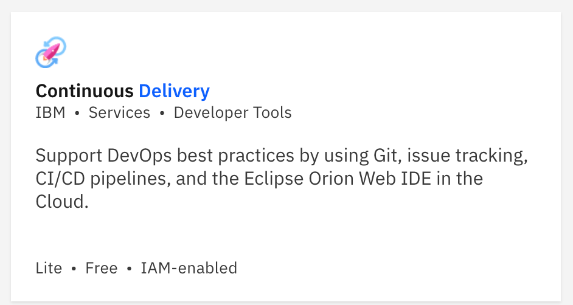 - Select Dallas Region, as the Tutorial will be using Managed Tekton Worker available in Dallas only.
- Select a Plan
- Click Create
Create an IBM Cloud Toolchain
In this task, you create a toolchain and add the tools that you need for this tutorial. Before you begin, you need your API key and Kubernetes cluster name.
- Open the menu in the upper-left corner and click DevOps. Click ToolChains. Click Create a toolchain. Type in the search box
toolchain. Click Build Your Own Toolchain. 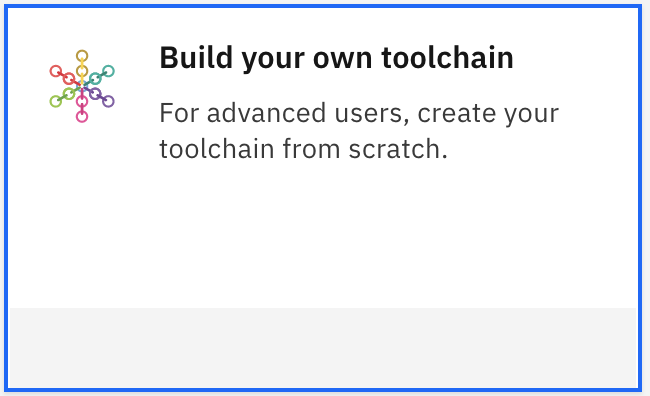 - On the "Build your own toolchain" page, review the default information for the toolchain settings. The toolchain's name identifies it in IBM Cloud. Each toolchain is associated with a specific region and resource group. From the menus on the page, select the region Dallas since we are going to use the Beta Managed Tekton Worker, if you use Private Workers you can use any Region. 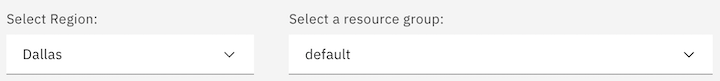
- Click Create. The blank toolchain is created.
- Click Add a Tool and click Git Repos and Issue Tracking.
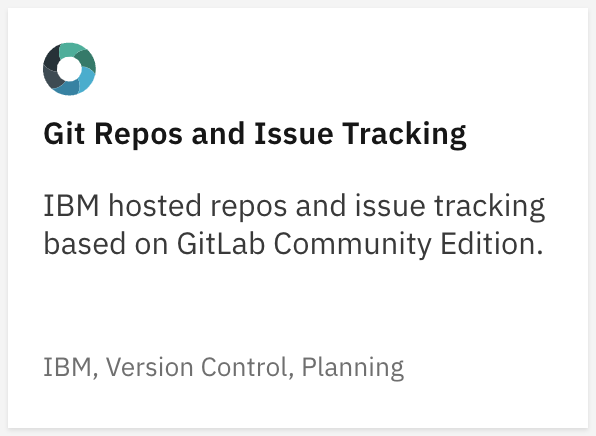
- From the Repository type list, select Clone.
- In the Source repository URL field, type
https://github.com/csantanapr/hello-tekton.git. - Make sure to uncheck the Make this repository private checkbox and that the Track deployment of code changes checkbox is selected. 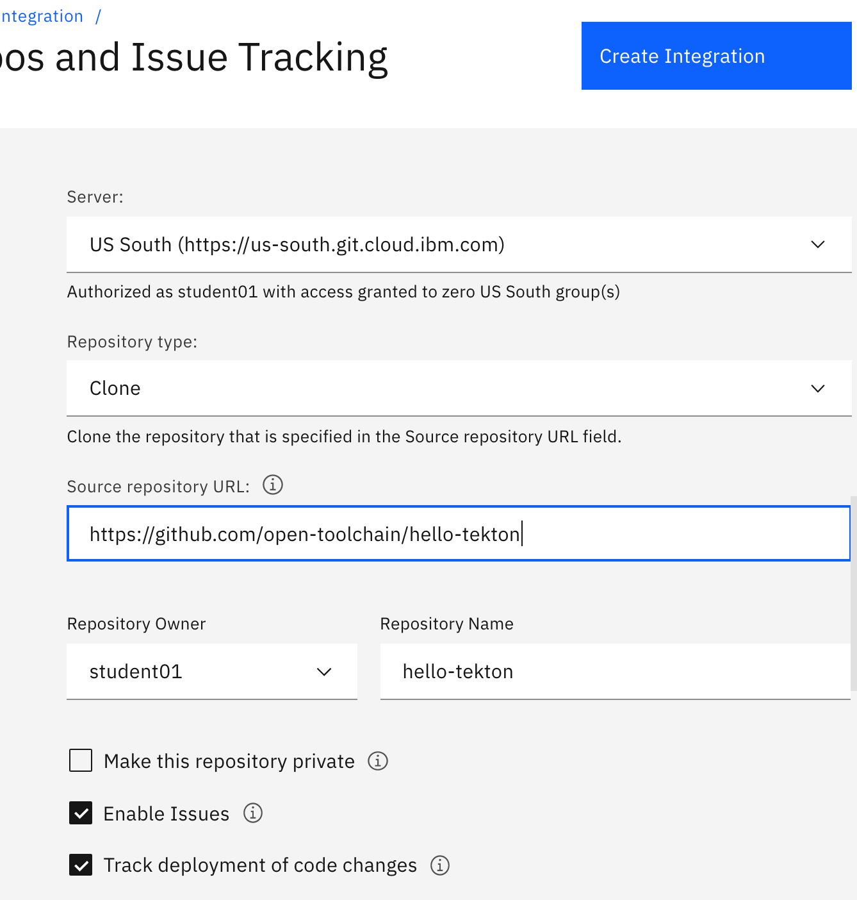
- Click Create Integration. Tiles for Git Issues and Git Code are added to your toolchain.
- Return to your toolchain's overview page.
- Click Add a Tool. Type
pipelinein seach box and click Delivery Pipeline. 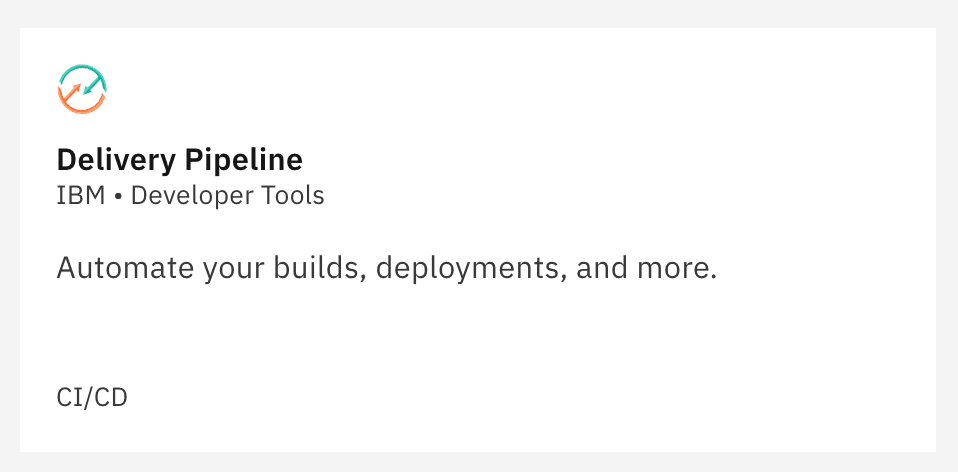- Type a name for your new pipeline.
- Click Tekton. 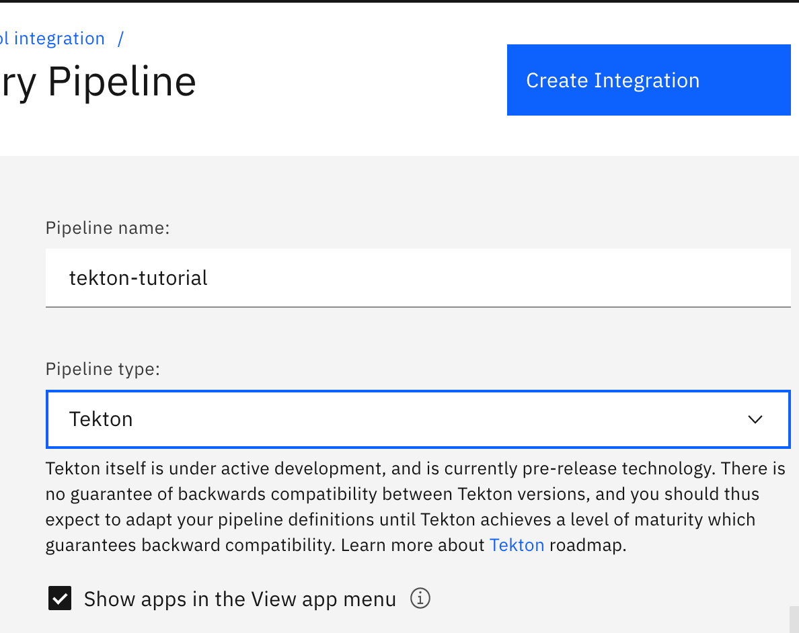
- Make sure that the Show apps in the View app menu checkbox is selected. All the apps that your pipeline creates are shown in the View App list on the toolchain's Overview page.
- Click Create Integration to add the Delivery Pipeline to your toolchain.
- Click Delivery Pipeline to open the Tekton Delivery Pipeline dashboard. Click the Definitions tab and complete these tasks:
- Click Add to add your repository.
- Specify the Git repo and URL that contains the Tekton pipeline definition and related artifacts. From the list, select the Git repo that you created earlier.
- Select the branch in your Git repo that you want to use. For this tutorial, use the default value.
- Specify the directory path to your pipeline definition within the Git repo. You can reference a specific definition within the same repo. For this tutorial, use the default value. 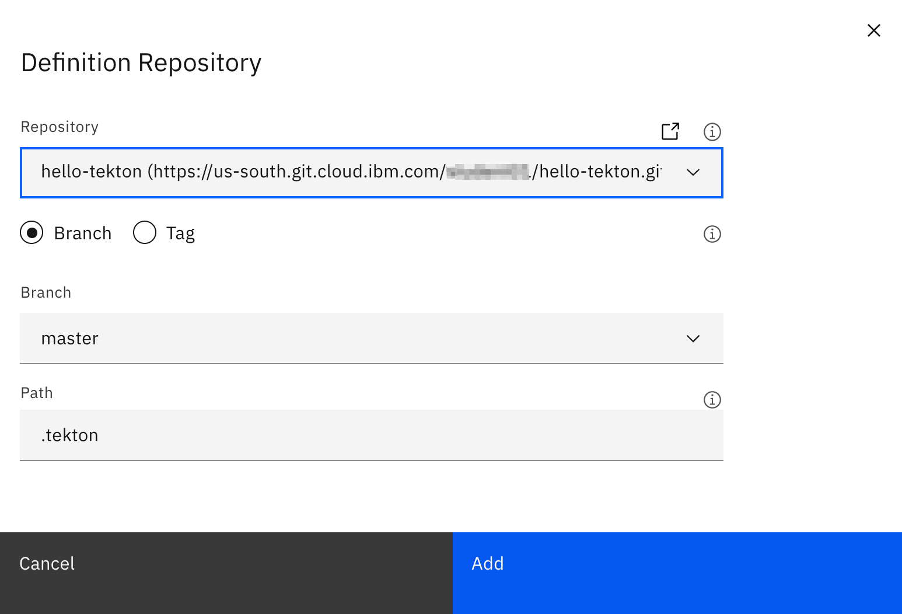
- Click Add, then click Save
- Click the Worker tab and select the private worker that you want to use to run your Tekton pipeline on the associated cluster. Either select the private worker you set up in the previous steps, or select the IBM Managed workers in DALLAS option. 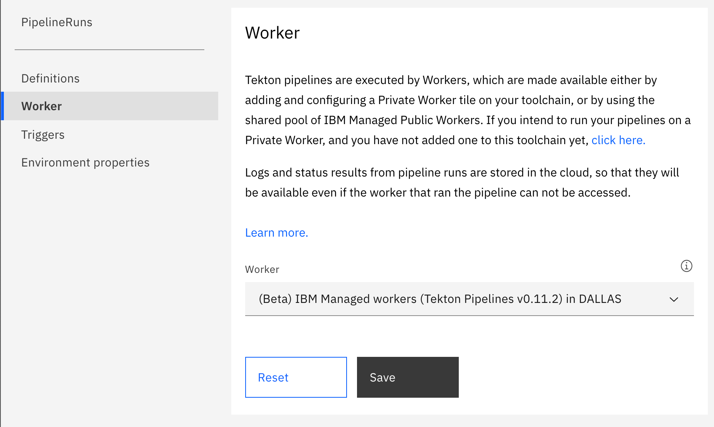
- Click Save
- Click the Triggers tab, click Add trigger, and click Git Repository. Associate the trigger with an event listener:
- From the Repository list, select your repo.
- Select the When a commit is pushed checkbox, and in the EventListener field, make sure that listener is selected. 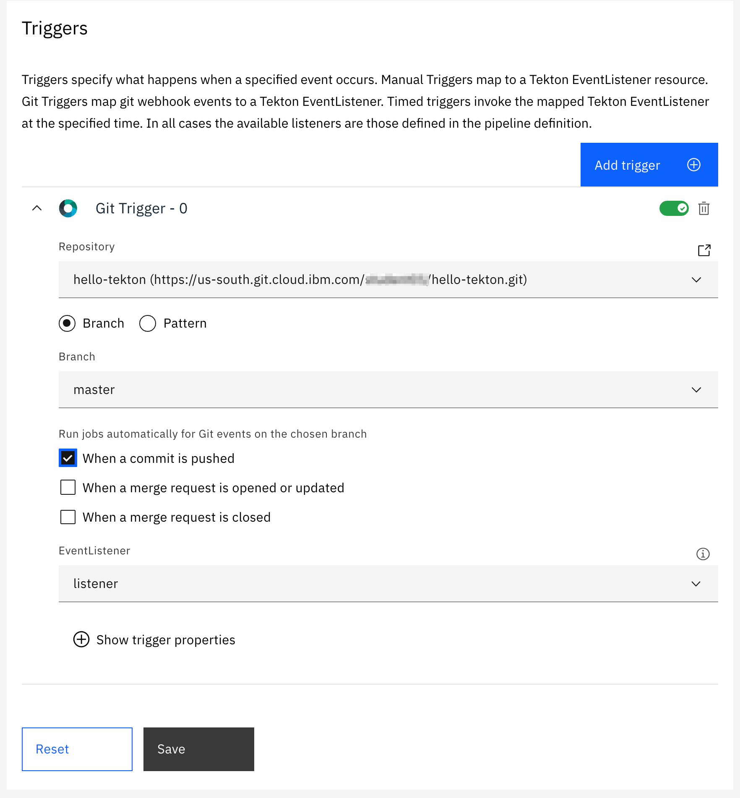
- Click Save
- On the Triggers tab, click Add trigger and click Manual. Associate that trigger with an event listener:
- In the EventListener field, make sure that listener is selected.
- Click Save. 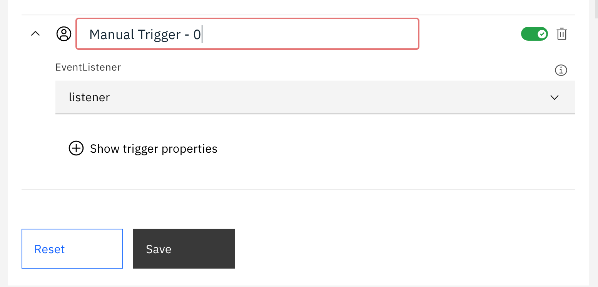 Note: Manual triggers run when you click Run pipeline and select the trigger. Git repository triggers run when the specified Git event type occurs for the specified Git repo and branch. The list of available event listeners is populated with the listeners that are defined in the pipeline code repo.
- Click the Environment properties tab and define the environment properties for this tutorial. To add each property, click Add property and click Text property. Add these properties:
| Parameter | Required? | Description |
|---|---|---|
| apikey | required | Type the API key that you created earlier in this tutorial. |
| cluster | Optional (cluster) | Type the name of the Kubernetes cluster that you created. |
| registryNamespace | required | Type the IBM Image Registry namespace where the app image will be built and stored. To use an existing namespace, use the CLI and run ibmcloud cr namespace-list to identify all your current namespaces |
| repository | required | Type the source Git repository where your resources are stored. This value is the URL of the Git repository that you created earlier in this tutorial. To find your repo URL, return to your toolchain and click the Git tile. When the repository is shown, copy the URL. |
| revision | Optional (master) | The Git branch |
| clusterRegion | Optional (us-south) | Type the region where your cluster is located. |
| clusterNamespace | Optional (prod) | The namespace in your cluster where the app will be deployed. |
| registryRegion | Optional (us-south) | The region where your Image registry is located. To find your registry region, use the CLI and run ibmcloud cr region. |
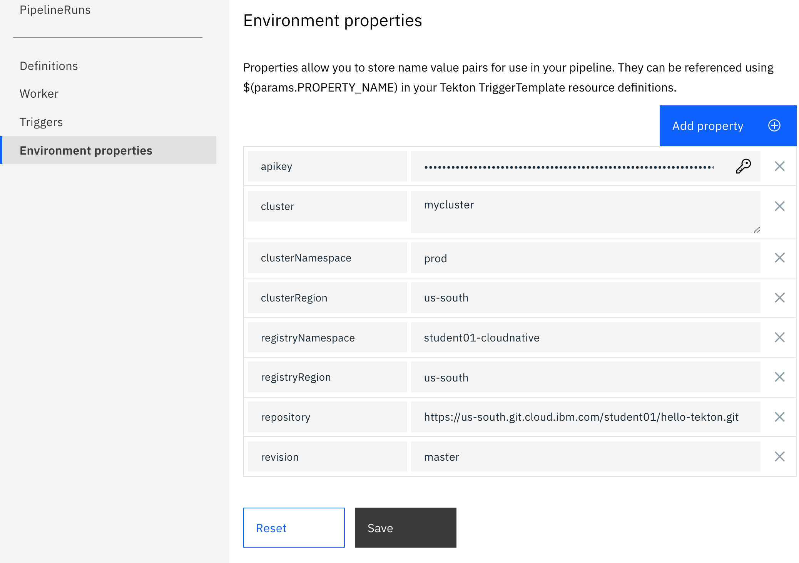 12. Click Save
Explore the pipeline
With a Tekton-based delivery pipeline, you can automate the continuous building, testing, and deployment of your apps.
The Tekton Delivery Pipeline dashboard displays an empty table until at least one Tekton pipeline runs. After a Tekton pipeline runs, either manually or as the result of external Git events, the table lists the run, its status, and the last updated time of the run definition.
To run the manual trigger that you set up in the previous task, click Run pipeline and select the name of the manual trigger that you created. The pipeline starts to run and you can see the progress on the dashboard. Pipeline runs can be in any of the following states:
- Pending: The PipelineRun definition is queued and waiting to run.
- Running: The PipelineRun definition is running in the cluster.
- Succeeded: The PipelineRun definition was successfully completed in the cluster.
-
Failed: The PipelineRun definition run failed. Review the log file for the run to determine the cause. 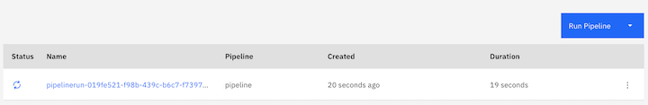
-
For more information about a selected run, click any row in the table. You view the Task definition and the steps in each PipelineRun definition. You can also view the status, logs, and details of each Task definition and step, and the overall status of the PipelineRun definition. 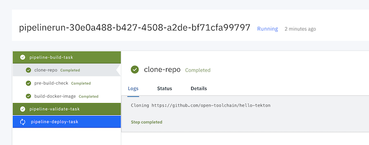
-
The pipeline definition is stored in the
pipeline.yamlfile in the.tektonfolder of your Git repository. Each task has a separate section of this file. The steps for each task are defined in thetasks.yamlfile. -
Review the pipeline-build-task. The task consists of a git clone of the repository followed by two steps:
- pre-build-check: This step checks for the mandatory Dockerfile and runs a lint tool. It then checks the registry current plan and quota before it creates the image registry namespace if needed.
- build-docker-image: This step creates the Docker image by using the IBM Cloud Container Registry build service through the
ibmcloud cr buildCLI script.
- Review the pipeline-validate-task. The task consists of a git clone of the repository, followed by the check-vulnerabilities step. This step runs the IBM Cloud Vulnerability Advisor on the image to check for known vulnerabilities. If it finds a vulnerability, the job fails, preventing the image from being deployed. This safety feature prevents apps with security holes from being deployed. The image has no vulnerabilities, so it passes. In this tutorial template, the default configuration of the job is to not block on failure.
- Review the pipeline-deploy-task. The task consists of a git clone of the repository followed by two steps:
- pre-deploy-check: This step checks whether the IBM Container Service cluster is ready and has a namespace that is configured with access to the private image registry by using an IBM Cloud API Key.
- deploy-to-kubernetes: This step updates the
deployment.ymlmanifest file with the image url and deploys the application usingkubectl apply
- After all the steps in the pipeline are completed, a green status is shown for each task. Click the deploy-to-kubernetes step and click the Logs tab to see the successful completion of this step. 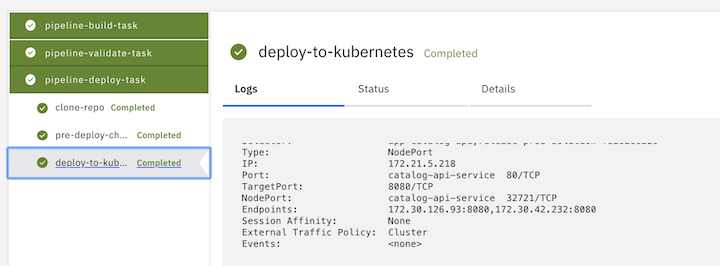
- Scroll to the end of the log. The
DEPLOYMENT SUCCEEDEDmessage is shown at the end of the log. 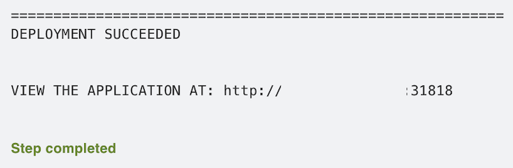 - Click the URL to see the running application. 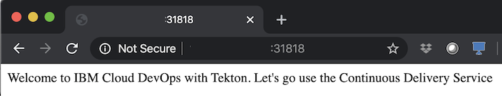
Modify the App Code
In this task, you modify the application and redeploy it. You can see how your Tekton-based delivery pipeline automatically picks up the changes in the application on commit and redeploys the app.
- On the toolchain's Overview page, click the Git tile for your application.
- Tip: You can also use the built-in Eclipse Orion-based Web IDE, a local IDE, or your favorite editor to change the files in your repo.
- In the repository directory tree, open the
app.jsfile. 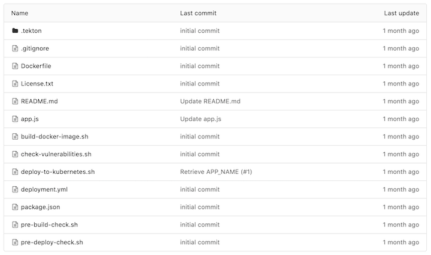 - Edit the text message code to change the welcome message. 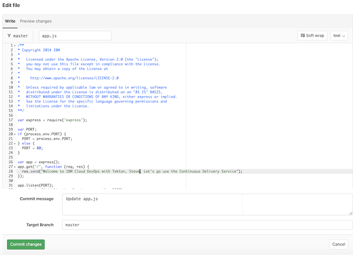
- Commit the updated file by typing a commit message and clicking Commit changes to push the change to the project's remote repository.
- Return to the toolchain's Overview page by clicking the back arrow.
- Click Delivery Pipeline. The pipeline is running because the commit automatically started a build. Over the next few minutes, watch your change as it is built, tested, and deployed. 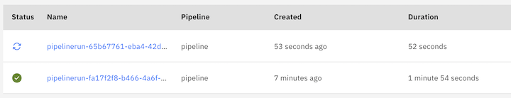
- After the deploy-to-kubernetes step is completed, refresh your application URL. The updated message is shown.
Clean up Resources
In this task, you can remove any of the content that is generated by this tutorial. Before you begin, you need the IBM Cloud CLI and the IBM Cloud Kubernetes Service CLI. Instructions to install the CLI are in the prerequisite section of this tutorial.
- Delete the git repository, sign in into git, select personal projects. Then go to repository General settings and remove the repository.
- Delete the toolchain. You can delete a toolchain and specify which of the associated tool integrations you want to delete. When you delete a toolchain, the deletion is permanent.
- On the DevOps dashboard, on the Toolchains page, click the toolchain to delete. Alternatively, on the app's Overview page, on the Continuous delivery card, click View Toolchain.
- Click the More Actions menu, which is next to View app.
- Click Delete. Deleting a toolchain removes all of its tool integrations, which might delete resources that are managed by those integrations.
- Confirm the deletion by typing the name of the toolchain and clicking Delete.
- Tip: When you delete a GitHub, GitHub Enterprise, or Git Repos and Issue Tracking tool integration, the associated repo isn't deleted from GitHub, GitHub Enterprise, or Git Repos and Issue Tracking. You must manually remove the repo.
- Delete the cluster or discard the namespace from it. It is easiest to delete the entire namespace (Please do not delete the
defaultnamespace) by using the IBM Cloud™ Kubernetes Service CLI from a command-line window. However, if you have other resources that you need to keep in the namespace, you need to delete the application resources individually instead of the entire namespace. To delete the entire namespace, enter this command: - Delete your IBM Cloud API key.
- From the Manage menu, click Access (IAM). Click IBM Cloud API Keys.
- Find your API Key in the list and select Delete from the menu to the right of the API Key name.
- Delete the container images. To delete the images in your container image registry, enter this command in a command-line window:
If you created a registry namespace for the tutorial, delete the entire registry namespace by entering this command:
- Note: You can run this tutorial many times by using the same registry namespace and cluster parameters without discarding previously generated resources. The generated resources use randomized names to avoid conflicts.
Summary
You created a toolchain with a Tekton-based delivery pipeline that deploys a "Hello World" app to a secure container in a Kubernetes cluster. You changed a message in the app and tested your change. When you pushed the change to the repo, the delivery pipeline automatically redeployed the app.
- Read more about the IBM Cloud Kubernetes Service
- Read more about Tekton
- Explore the DevOps reference architecture.